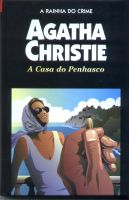

A Casa do Penhasco
Peril at End House
As férias de Poirot na Costa das Cornualhas trilha caminhos inusitados quando ele encontra a jovem e bela Senhorita Nick Buckley. Poirot percebe que há alguém tentando matá-la, e decide então protegê-la. Porém, mesmo tentando escondê-la em uma clínica de repouso, parece que não é possível evitar mais um atentado contra a vida de Nick. Poirot deve usar de toda a sua astúcia para resolver este complicado caso.
Gabriela Pires: Quem queria a morte da belíssima Nick? Tentaram matá-la 3 vezes e a última tentativa foi em frente à Hercule Poirot e seu fiel amigo Hastings. Por que todos os seus amigos pareciam esconder alguma coisa sobre a jovem? Por que todos tentavam mentir ou mudar tudo sobre ela? E quem eram os devotados australianos que moraram na pequena casa na entrada da mansão de Nick? Misteriosas perguntas serão respondidas no final, quando Poirot encrontra o assassino cruel da Casa do Penhasco...
Edson Oliveira: A bela dona da casa do penhasco, Nick, sofre uma série de atentados. Ou seriam apenas acidentes? A falta de um motivo, parece indicar a segunda solução. Mas seria coincidência de mais uma bela jovem escapar da morte quatro vezes? Para desvendar este mistério e tentar protegê-la, entra em cena Hercule Poirot, revelando um final surpreendente!